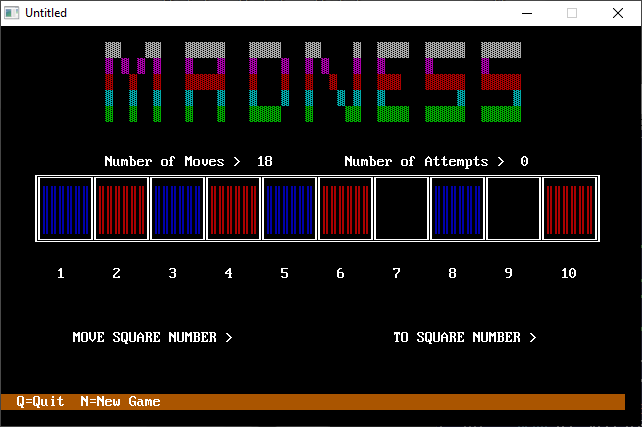

Home • News • GitHub • Wiki • Samples • InForm • GX • QBjs • Community • More…
SAMPLE: MADNESS

Author
Description
*****************************************************************************
MADNESS.BAS
by Dennis Mull and Tina Sweet
Copyright (C) 1994 DOS World
Published in Issue #22, July 199, page 53
MADNESS.BAS will test your genius for solving puzzles. It's easy to play,
but hard to win.
Play centers on a board consisting of a row of ten squares. Each of the four
squares at the left end of the board contains a red playing piece; each of
the four squares on the right end contains a blue piece. To win, you must
move the red pieces to the right end of the board and the blue pieces to the
left end. But you can move a piece only by jumping over another piece or by
advancing it one or two blank spaces at time. You can't move backward. Think
you can figure it out? Have a try!
To run the program from the DOS command line, change to the directory
containing MADNESS.BAS, then type:
QBASIC /RUN MADNESS
Watch carefully; you might learn something, because the program begins by
providing a demonstration of one way to win the game.
After the demo ends, MADNESS.BAS resets the game board. Messages above the
playing grid tell you the number of moves and the number of attempts in the
current round of play. Below the grid are numbers identifying each square and
prompts asking you to type the number of the piece you want to move and its
new location. A highlighted bar at the bottom of the screen tells you to
press the Q key to quit or the N key to start the game over.
Now comes the challenge: figuring out a sequence of jumps and advances that
swap the positions of the red and blue pieces. Don't even think about trying
to move a playing piece backward. If you do, the program sounds a buzzer,
displays a "Sorry, you may not jump backward" message, and adds two extra
moves to your score.
The good news is that if you meet success in four or fewer games, the program
awards you genius status. If not, no harm done, and play continues until you
decide to quit.
Points of Interest
------------------
Pay attention to some special features of this program: the subroutines
KEYKILL, MAKESOUND, and WARNING, plus the lines in the main program
associated with them. You may find these routines useful in your own
programs.
KEYKILL keeps unwanted keystrokes from being executed while the program is
handling other tasks. To achieve this, it clears the keyboard buffer before
another input statement is executed.
MAKESOUND provides control over the game's sound effects. It's a versatile
routine. because you can add new sounds to it merely by changing the value of
the variable WHICH% and adding a CASE and a SOUND statement to the
subroutine. When a particular case condition is met, the program plays the
sound immediately after that case command. To play the sound, use a line such
as this one:
IF AA% = 0 OR BB% = 0 THEN MAKESOUND 2: GOTO REDO
If the value of AA% or BB% is zero, the program executes the MAKESOUND
subroutine with the value of WHICH% set to 2. As a result, the CASE 2 sound--
sound 50, 5 --plays.
The structure of WARNING is comparable to that of MAKESOUND. This time,
however, instead of triggering different sounds, various values sent to
WARNING trigger different messages.
As with MAKESOUND, you may add elements by appending CASE statements and
their corresponding messages. Here, for instance, the value sent to WARNING
is 4:
IF A$ <> "" THEN
IF BOX$(AA%) = "BLANK" THEN WARNING 4: A$ = ""
END IF
When the second line executes, the message corresponding to CASE 4 is
displayed: "Sorry, you may not move an empty square."
QBjs
Please note that QBjs is still in early development and support for these examples is extremely experimental (meaning will most likely not work). With that out of the way, give it a try!